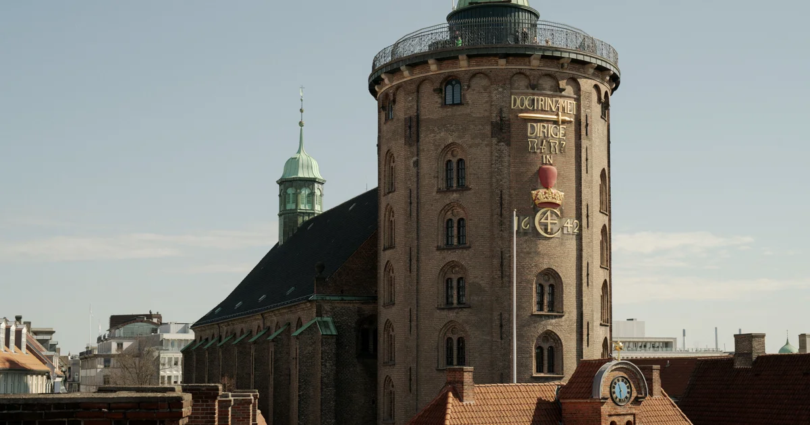
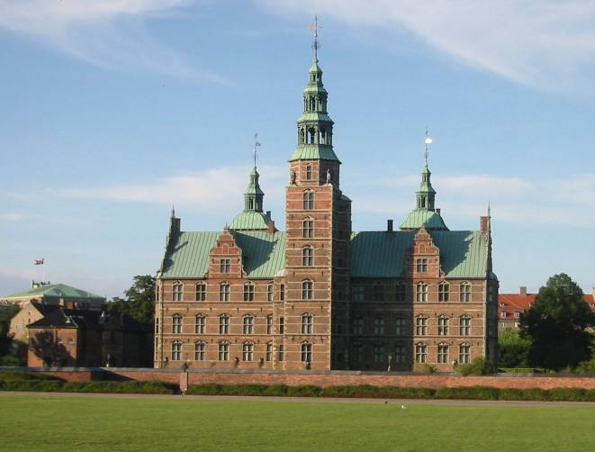
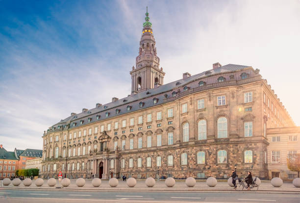
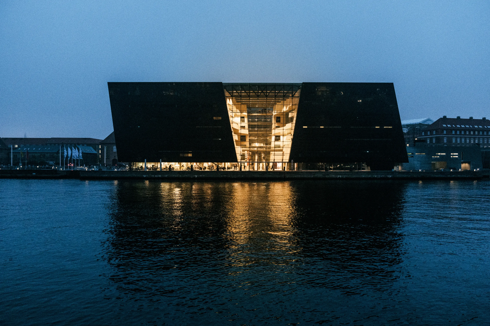

Magtens og Historiens Centrum
Rundetårn

Christian IV's berømte astronomiske observatorium fra 1642, kendt for sin unikke, brede sneglegang hele vejen til toppen. I stedet for trapper designede kongen tårnet med en bred, spiralformet rampe, så han kunne køre helt op til observatoriet i sin hestevogn. Fra platformen på toppen får du en af byens bedste oversigter over de gamle, snoede gader og farverige tage i det historiske latinerkvarter.
Rosenborg Slot

Et eventyrligt renæssanceslot placeret i Kongens Have, som huser de funklende danske kronjuveler. Slottet ligner noget direkte ud af et Disney-eventyr med sine mange tårne, spir og smukke sandstensdekorationer, der har stået uforandret i 400 år. Gå een tur gennem de underjordiske skatkamre for at se de uvurderlige kroner, scepter og dragter, som de danske konger og dronninger har båret gennem århundreder.
Christiansborg Slot

Sædet for det danske folketing, statsministeriet og de kongelige repræsentationslokaler – her slår Danmarks politiske hjerte. Det er det eneste sted i verden, hvor landets øverste lovgivende, dømmende og udøvende magt er samlet på ét og samme slot. Du kan helt gratis komme op i slottets tårn, som er byens højeste, hvorfra der er en fabelagtig udsigt – i klart vejr kan du endda se helt til Sverige.
Den Sorte Diamant

Det Kongelige Biblioteks moderne tilbygning, der med sit mørke glas og skæve vinkler spejler sig smukt i havnens vand. Den polerede sorte granit er importeret hele vejen fra Zimbabwe og skifter farve alt efter vejret, fra dyb sort til skinnende blå i solskinnet. Indenfor gemmer bygningen på et imponerende, lyst atrium med en enorm loftudsmykning af den berømte danske kunstner Per Kirkeby.
Klar til at dykke ned i historien?
Book din tur med Guldkareten og oplev Københavns storslåede magtcentrum på to hjul.
Kontakt os